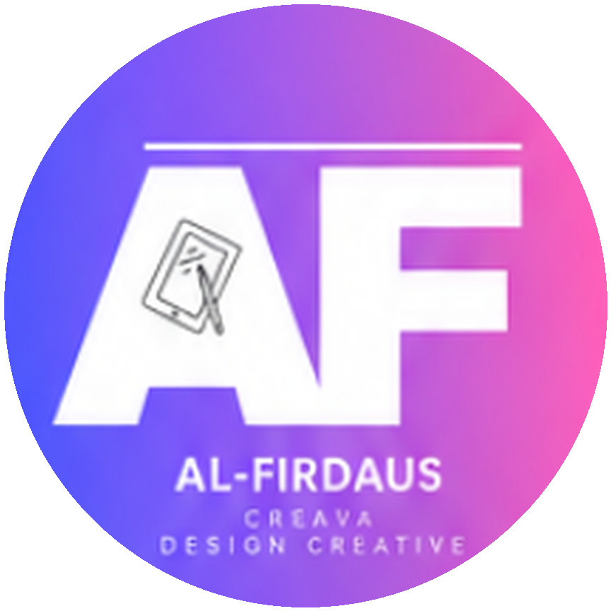

KIARA × AMMARCREAVAKiara (@kiara.ulas) ialah watak AI yang bercakap setiap hari di TikTok, Facebook, Threads dan Instagram. Kini dia boleh perkenalkan produk atau perkhidmatan anda: satu video review, atau jadi duta jenama anda setiap bulan.
Angka Kiara dari 13 hingga 24 Oktober 2026, bermula dari kosong pengikut.
Jujurnya: separuh video dapat bawah 2,800 tontonan, dan satu daripada tiga melepasi 10,000. Video produk biasanya di bawah video isu semasa.
Kiara ialah watak rekaan yang dijana AI. Ekspresinya dipilih ikut mesej produk anda.
Jumlah tontonan gabungan TikTok, Facebook dan Threads, setakat 25 Oktober 2026.
Semua di atas ialah video Kiara sendiri, bukan video iklan. Contoh review produk akan ditambah selepas slot pertama.
Satu video khas tentang produk atau perkhidmatan anda, dalam gaya Kiara bercakap.
Kiara jadi muka jenama anda selama sebulan, dengan kehadiran setiap minggu.
Harga ialah cadangan dan boleh dirunding. Tiada jaminan jumlah tontonan atau jualan.
Kongsi produk, gambar, harga dan apa yang anda mahu penonton tahu.
Kami tulis skrip dalam gaya Kiara. Anda semak dan luluskan dahulu.
Video dihasilkan dan disiar di akaun Kiara ikut tarikh yang dipersetujui.
Anda dapat pautan video dan angka tontonan setiap platform.
Di Sepanyol, Jepun, Brazil, Thailand dan Singapura, watak AI sudah menjadi muka iklan dan duta jenama. Kiara membawa cara yang sama kepada peniaga tempatan.
Tiada penggambaran yang perlu dijadualkan semula. Video siap ikut tarikh.
Rupa, suara dan gaya Kiara sama dalam setiap video untuk jenama anda.
Setiap ayat dalam skrip diluluskan anda sebelum video dibuat.
Setiap video iklan ditanda sebagai kandungan berbayar, ikut peraturan platform.
Kiara hanya sebut perkara yang anda boleh buktikan tentang produk.
Kami hanya terima produk yang kena dengan penonton Kiara.
Tiada beli pengikut, bot atau tontonan palsu.
Beritahu kami produk anda dan pilihan servis. Kami balas dengan cadangan skrip dan tarikh siaran.
WhatsApp 013-691 2423